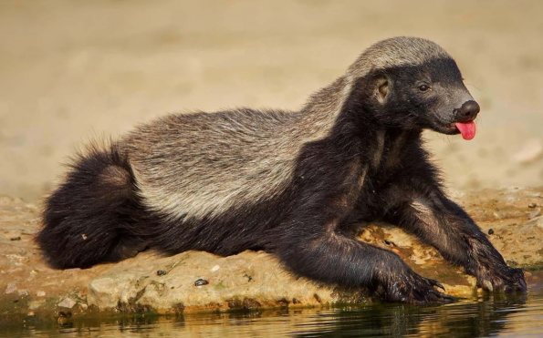

Мини статья о "Медоеде"

Немного о нем
- Эукариоты
- Животные
- Хордовые
- Млекопитающие
- Хищные
- Куньи
Шерсть медоедов чёрно-белой окраски с чётким разграничением. Как правило, сверху она от головы до хвоста бело-серая. Бока и нижняя часть тела, включая морду и конечности, окрашены в чёрный цвет. В некоторых африканских регионах джунглей, например на севере Демократической республики Конго, встречаются и полностью чёрные экземпляры. Телосложение у медоедов коренастое, конечности и хвост относительно короткие, а передние лапы снабжены острыми когтями. Голова широкая с коротким острым носом, глаза маленькие, видимых частей ушей нет. Размер медоедов достигает 77 см, не считая хвоста около 25 см. Масса — от 7 до 13 кг, самцы немного тяжелее самок.
Немного фактов об этом животном
- Внешне чёрно-белая окраска медоедов напоминает таковую у скунсов. Это сходство, наверное, не случайно, потому что в случае агрессии эти животные, как и скунсы, могут испускать жутко зловонный запах. Это оружие они используют в качестве оборонительного, и на охоте к нему обычно не прибегают.
- Как и родственные им барсуки, медоеды едят практически всё, но они всё-таки являются активными хищниками. Несмотря на название, мёд составляет лишь незначительную часть их рациона. Эти животные предпочитают мясо, причём они часто охотятся на добычу, в несколько раз превосходящую их размерами, включая других хищников.
- Медоеды всю жизнь проводят на поверхности земли, но в случае необходимости они могут лазать по деревьям. Такая необходимость у них обычно назревает в случае обнаружения улья диких пчёл, в котором можно добыть немного мёда. В таких случаях желание полакомиться у них побеждает лень, и они лезут на дерево. К тому же пчёлы практически не могут причинить им никакого вреда, единственными уязвимыми для их укусов местами на теле медоеда являются глаза и нос.
Страница в википедии

Поэтому лучше не злить его